Project 1: Images of the Russian Empire
The goal of this project was to reconstruct color images from the Prokudin-Gorskii photo collection. Each scan contains three grayscale exposures taken through blue, green, and red filters. By aligning these exposures and combining them, we can produce a color photograph.
Part 1: Single-Scale Alignment
The pixel values are first converted to floats between 0 and 1 by dividing by 255 for 8-bit scans or 65,535 for 16-bit scans. Each scan is then split into three images: blue, green, and red from top to bottom.
When aligning, blue is kept fixed in place while green and red are shifted to match it. For single-scale alignment, every shift from −15 to 15 pixels is tested in both directions. This gives 961 possible shifts per color channel. Each shift is scored using normalized cross-correlation (NCC), and the shift with the highest score is selected.
NCC first subtracts the mean from each image. For the resulting vectors b and b, we can then divide their dot product by the product of their lengths. This compares their brightness patterns while reducing the influence of overall brightness and contrast differences.
The outer 10% of each frame is excluded when scoring since the black and white scan borders can interfere with alignment. This means that every candidate is compared using the same valid interior region.
The selected shifts are then applied using np.roll(), and the channels are stacked in RGB order. The pixels that wrap around the edges are also cropped away. The original scan borders can still remain, which explains why there are colored bands around some images.


{kind=link}
The single-scale results align the buildings and rooflines in all three JPEGs.
Part 2: Multi-Scale Pyramid Alignment
The larger TIFFs require shifts that extend beyond the single-scale search window. Searching for these larger shifts at full resolution would require a large number of comparisons.
An image pyramid reduces this work by repeatedly downsampling the image. We first apply a filter that approximates a Gaussian blur, convolving the image horizontally and vertically with the normalized kernel [1, 4, 6, 4, 1] / 16 and reflection padding. This reduces aliasing as we scale the image down. We then reduce the resolution by half by taking every second row and column, and then repeat this process until the longest side is at most 300 pixels.
For alignment, we start at the smallest level with a ±15-pixel NCC search. Moving to the next level doubles the previous offset, then we search ±3 pixels around that estimate in both directions. This gives 49 possible shifts at each refinement step. The process continues all the way to the original resolution, where the final offsets are applied.
For a five-level pyramid, this would requires 961 comparisons at the smallest level and four sets of 49, or 1,157 total comparisons per channel. A full-resolution ±179-pixel search would require 128,881 comparisons. The pyramid is much faster because the broad search happens on a small image, and each larger level simply refines the estimate.
The results of the eleven provided TIFF images are shown below. NCC is applied to raw pixel values for all results in this section. Click an image to view the full-resolution result. The computed offsets are available in offsets.csv.
{kind=link}
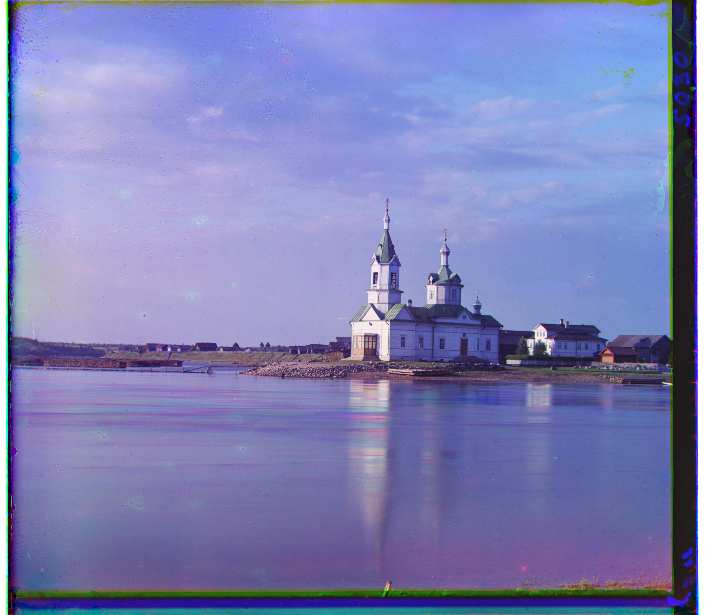
Church
{kind=link}
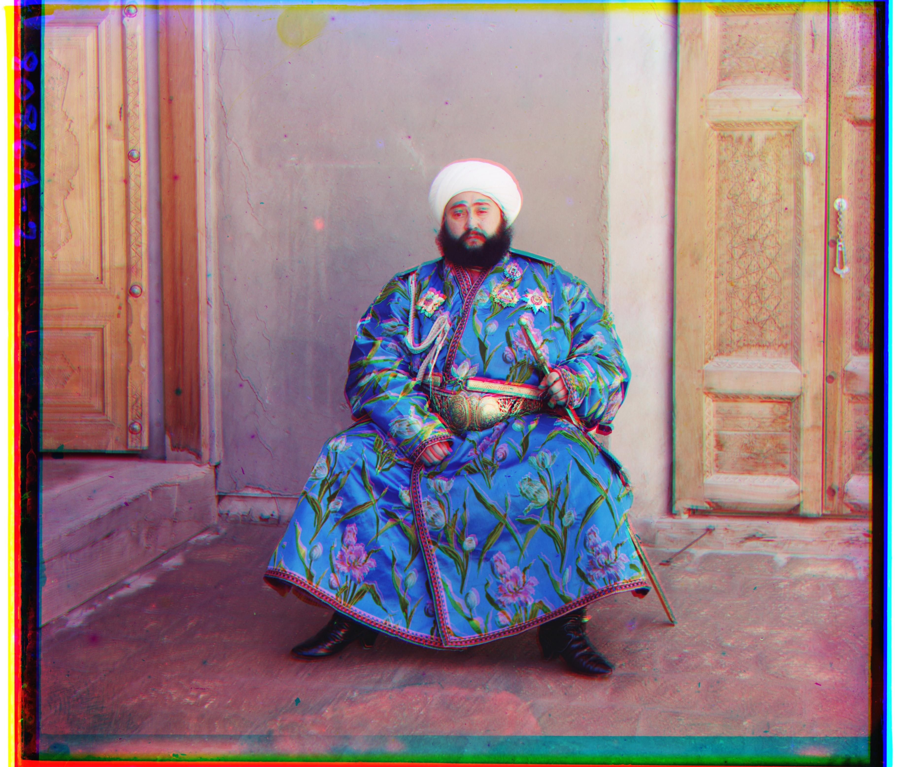
Emir (See Part 4 for correction)
{kind=link}
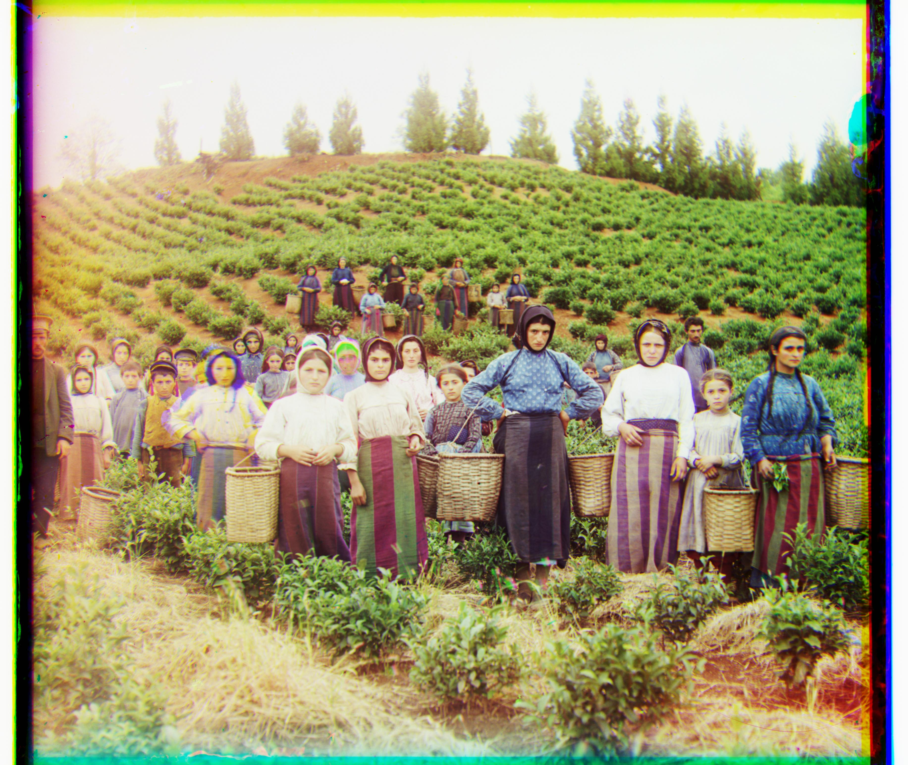
Harvesters
{kind=link}
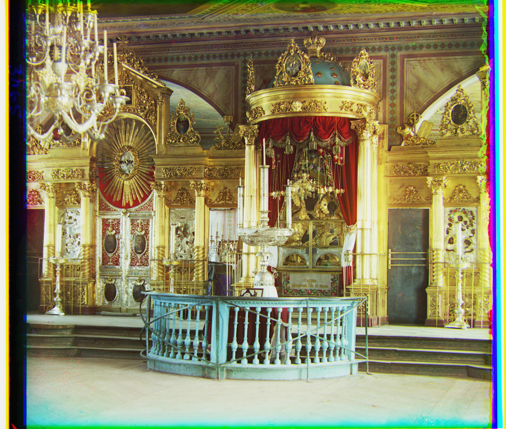
Icon

Ilemselga
{kind=link}
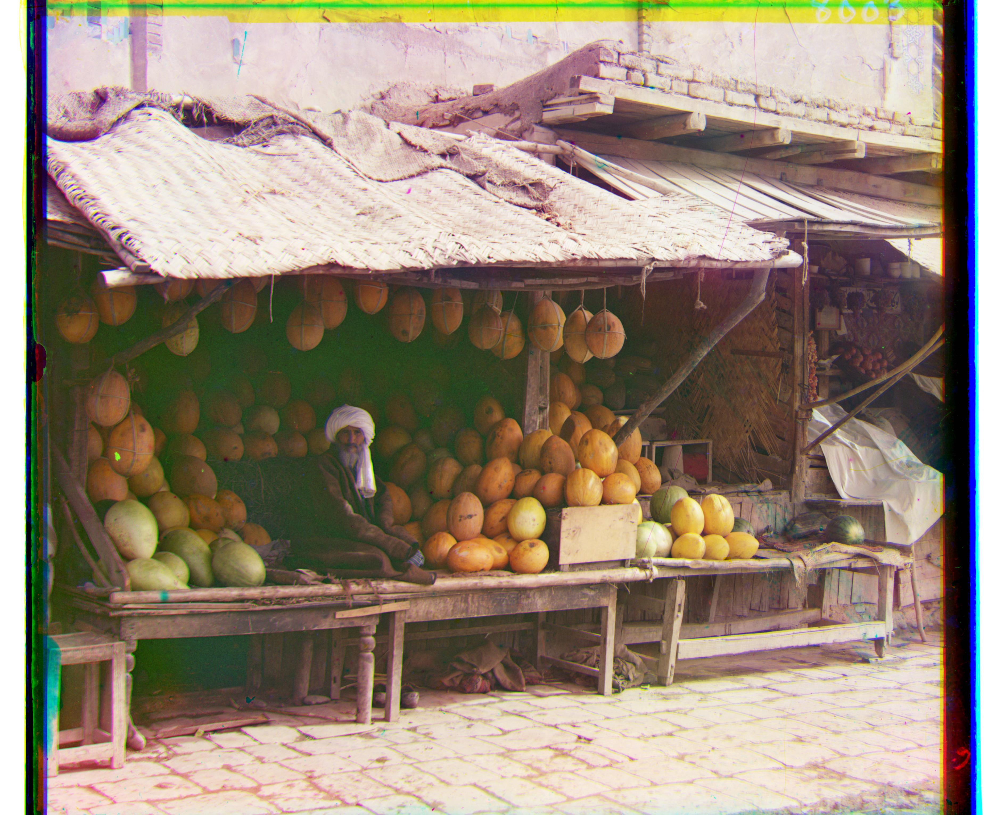
Melons

Religious painting
{kind=link}
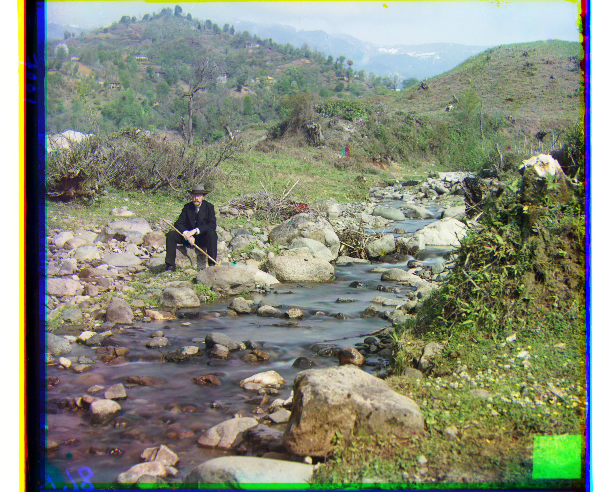
Self portrait

Siren
{kind=link}
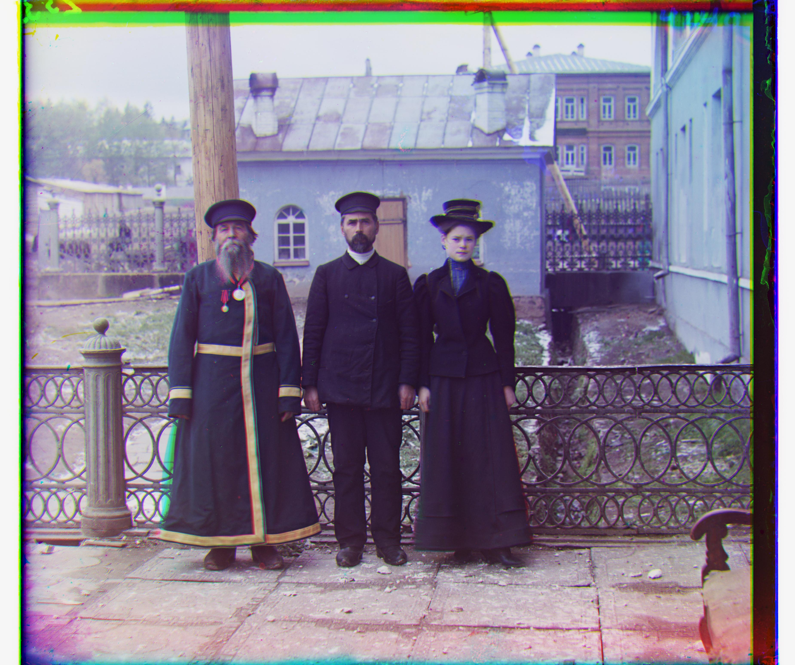
Three generations
{kind=link}
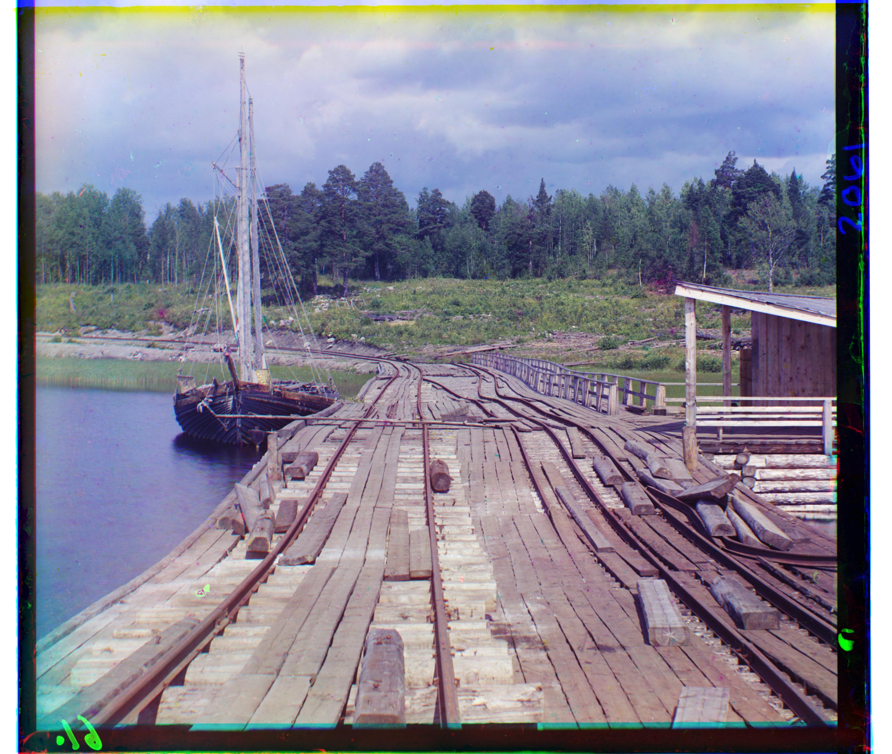
Wharf
Some people and foliage still have small colored artifacts. Movement between exposures can leave local distortions even when the rest of the scene is aligned.
Part 3: Additional Images
The same pyramid method was applied to three additional full-resolution scans from the Library of Congress: a cotton mill, adobe buildings, and a city view. These use NCC on raw pixel values with the same settings as the provided images.
{kind=link}
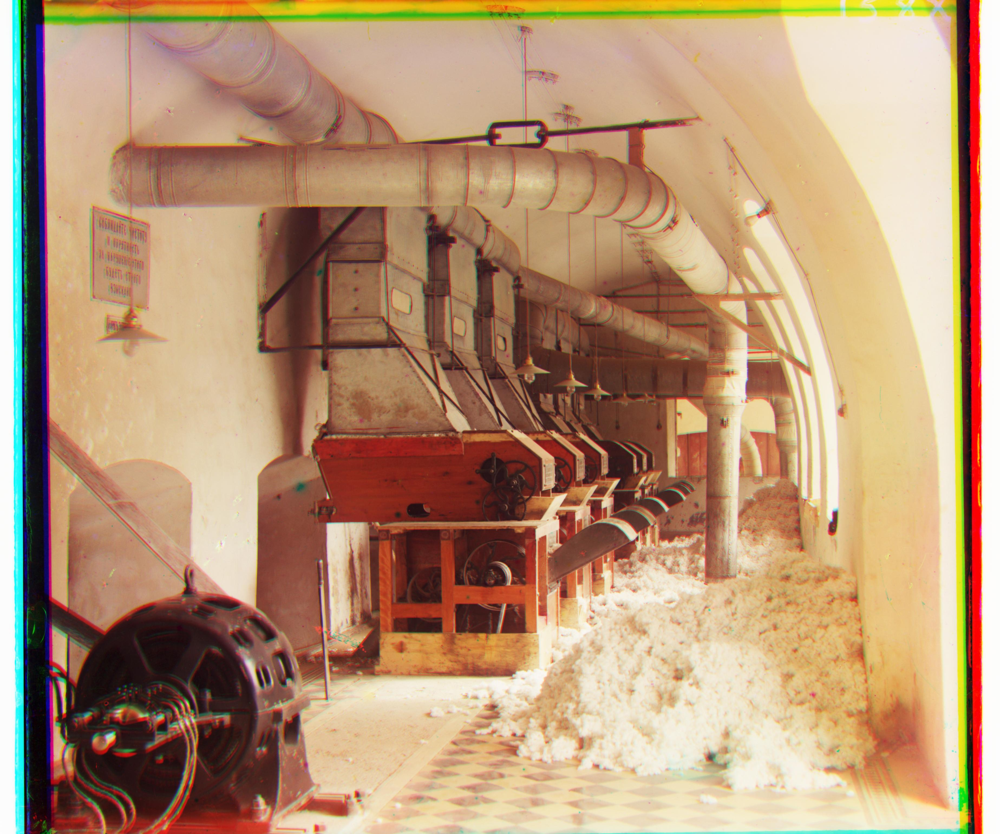
Cotton textile mill
Source
{kind=link}
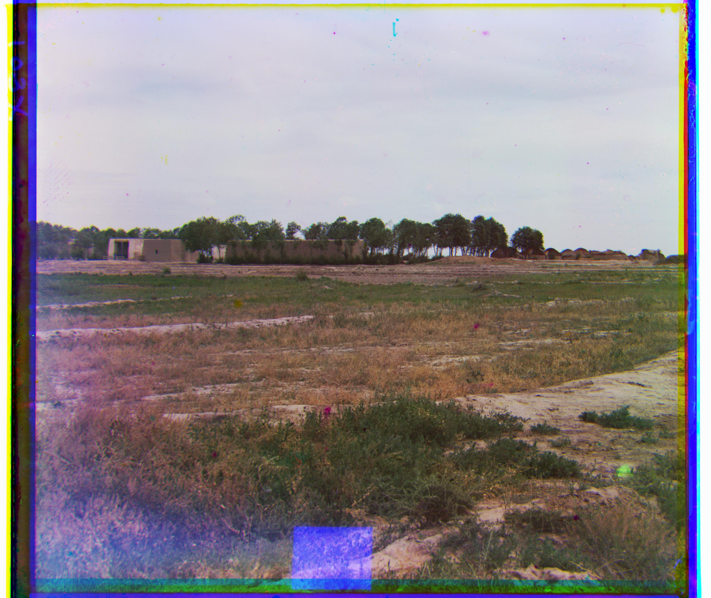
Adobe buildings and yurts
Source
{kind=link}
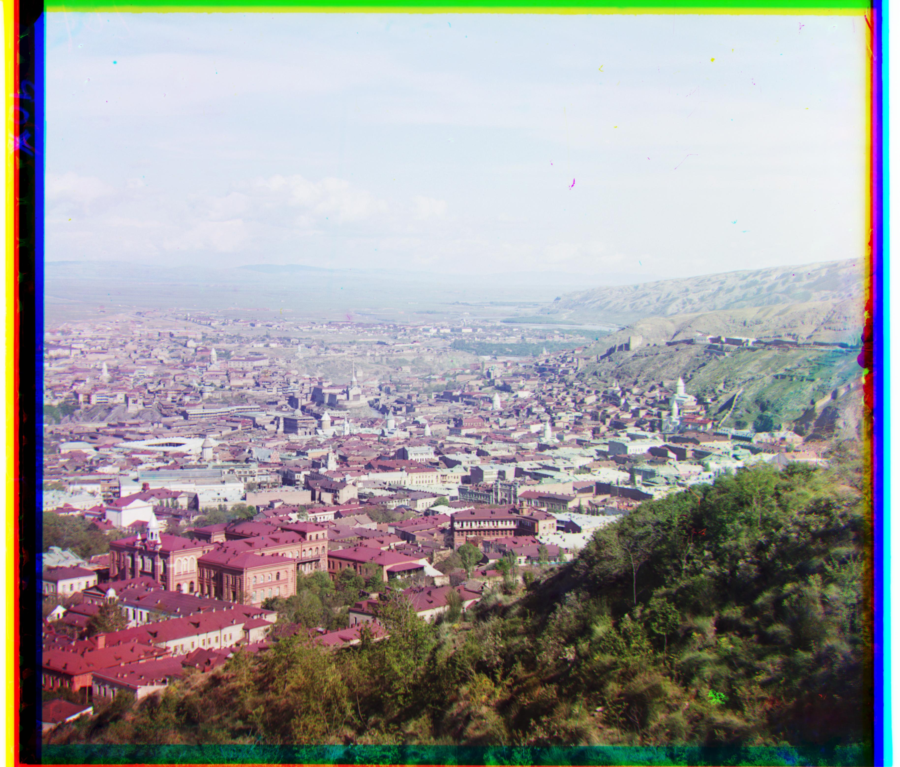
Tiflis
Source
The building outlines and distant tree line are aligned, though some colored artifacts remain on the mill machinery. A colored mark is also visible near the bottom of the adobe.
Part 4: Applying Gradient Matching to Emir
Emir’s blue robe has very different brightness values in the red and blue exposures. Although NCC handles overall brightness changes, the relative brightness of objects can still cause an incorrect match. The raw pixel result produces a large alignment error in the red channel, as shown below.
To correct this, Emir is aligned using gradient magnitude instead of raw brightness. Horizontal and vertical brightness changes are estimated from the difference between neighboring pixels on either side, divided by two. Their magnitude gives the edge strength. This helps match object outlines even when their brightness differs between channels.
Gradients are calculated at each pyramid level, followed by the same NCC search. The final shifts are then applied to the original color channels.
{kind=link}
Using gradients improves alignment around the face, robe, and background. Some small artifacts still remain.
Part 5: Running the Reconstruction
- Open the
proj1/folder in a terminal. All of the code and settings are in proj1.py. - Place the scans in
proj1_data/and make sure theassets/folder exists. - Install NumPy and scikit-image with
python -m pip install -r requirements.txt. - Run
python proj1.py. JPEGs use single-scale alignment and TIFFs use pyramid alignment. Every scan is reconstructed using raw pixels, and Emir also gets a gradient reconstruction. - View the 18 output JPEGs for the 17 scans and offsets.csv in
assets/. The green and red offsets are also printed in the terminal.